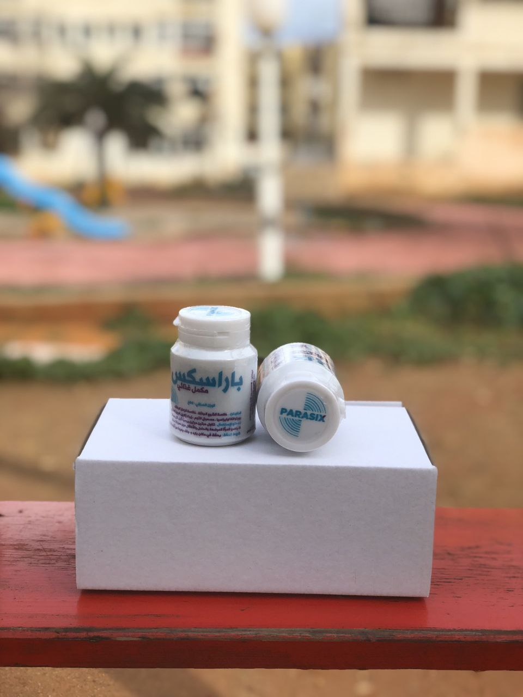

البثور ناتجة عن وجود الطفيليات في جسمك!
إذا كان لديك بثور على عنقك ، تحت أذرعك او في أي مكان آخر - إذن الطفيليات تأكلك من الداخل!
البثور ناتجة عن وجود الطفيليات في جسمك!
إذا كان لديك بثور على عنقك ، تحت أذرعك او في أي مكان آخر - إذن الطفيليات تأكلك من الداخل!
إذا كان لدى شخص ما بثور او علامات على جلده ، فهذا يعني أن مستعمرة من الطفيليات القاتلة قد تداخلت في أعضائه الداخلية وتأكل الأنسجة ببطء.
الكثير يعانون من مشاكل الطفيليات
سوف نناقش اليوم موضوع مشاكل الطفيليات و كيف لها ان تؤثر بالسلب علي حياة الإنسان و كيف تتخلص من هذه الطفيليات .
تعتبر الطفيليات من الكائنات الدقيقة الحية التي تعيش على حساب الكائنات الحية الأخرى، وتنتشر بشكل واسع في العالم. وهناك العديد من أنواع الطفيليات التي تستطيع العيش داخل جسم الإنسان، وتسبب مشاكل صحية خطيرة.
من بين أنواع الطفيليات التي تعيش داخل جسم الإنسان، يمكن الإشارة إلى الديدان الشريطية والديدان الدائرية والطفيليات الأخرى. وتتسبب هذه الطفيليات في العديد من المشاكل بالجسم مثل الاضطرابات الهضمية والتسمم الغذائي وفقر الدم مشاكل جلدية.
- الديدان الشريطية
- الطفيليات الخارجية
الديدان الشريطية (بالانجليزية:Helminths) وهذا النوع يأخذ تسميات وأصنافاً متعددة مثل (الديدان المفلطحة، الدودة الشريطية، الديدان الشريطية، الديدان ذات الرأس الشائك، الديدان المستديرة، وديدان الدبوسية) والتي تتخذ من (الجهاز الهضمي والدم والجهاز اللمفاوي والأنسجة الأخرى) موطناً لها لتعيش فيه وتتكاثر.
الطفيليات الخارجية (بالانجليزية:Ectoparasites) هذا النوع من الطفيليات يمكن وجوده ضمن البيئة المحيطة بالإنسان، ومن أبرز الأمثلة عليه؛ القراد، والبراغيث، والقمل، والعث، التي تعيش على سطح جسم الإنسان، وتقوم بالتشبث بجسمه، ثم تبدأ بحفر جلده.
أماكن تواجد الطفيليات في جسم الإنسان
تَعِيشُ الطفيليَّات داخل جِسم الإنسان في عدَّة أماكن، وفيما يأتي بعض الأمثلة على أماكن عيش الطفيليَّات في جسم الإنسان:
-
البول
يمكن أن تستوطن الطفيليات بول الإنسان مسببة له بعض الأعراض المزعجة.
-
الأمعاء
تَنْتَقِلُ بعض الطفيليَّات للأمعاء البشريّةِ ، مثل البلانتيدات التي تنتقل من فضلات الخنازير.
-
الأنف والفم والحلق
تُؤَثِّرُ طفيليَّات معيَّنَة على الجلد وتنتقل عبر الأغشية المُخاطيَّة للفم، والأنف، والحلق.
-
الدماغ
تَسَبَّبُ أنواع طفَيليَّة معينة هجمات خطيرة على الدِّمَاغ، وتتحَوَّلُ لالتهابات سحايا، والتهاب الدماغ الأميَبيّ.
-
الرئتين
يمكن أن تعيش بعض أنواع الطفيليات في رئتي الإنسان، بحيث تكون السبب الرئيسي للمشاكل بالرئتين.
-
العضلات والأعصاب
تَتَأَثَّرُ عضلات وأعصاب الإنسان بأنواع مُعيَّنَة من الطفيليَّات، كطفيليَّات المثقبيات، والتي تنتقل من ذبابة تسي تسي للإنسان.
-
الدم
تَنْتَشِرُ أعدادٌ كبيرة من الطفيليَّات في دم الثدييّاتِ عن طريق القراد، وأشهرها المُسببة للملاريا.
أعراض الإصابة بالطفيليات :
- الشعور بالغثيان.
- فقدان الشهية للأكل.
- الإصابة بالإسهال.
- الشعور بآلام في البطن.
- فقدان الوزن.
- الشعور بإرهاق عام في الجسم.
- الإصابة برد فعل تحسسي.
- الإصابة بالحمّى.
- ظهور النوّبات العصبية.
- طفح جلدي يؤدي إلى الحكة.
- الإصابة بفقر الدم.
- انتفاخ الوجه.
- الشعور بآلام في العضلات.
- الشعور بالصداع.
- الحساسية اتجاه الضوء.
كيف تتخلص من الطفيليات ؟
عن طريق المكمل الغذائي "PARASIX" و هو منتج طبيعي 100% يتم استخدامه للتخلص من الطفيليات في الجسم. يحتوي PARASIX على مزيج من الأعشاب والمكونات النباتية المختلفة التي تعمل على تطهير الجسم والقضاء على الطفيليات في الجسم .
تحتوي تركيبة PARASIX على مكونات مثل مستخلص عشبة ألبا و بورتولاكا اوليراسيا وخلاصة الزعتر الجافة ومسحوق الثوم وزيت إكليل الجبل . كل هذه المكونات تعمل على تحسين صحة الجهاز الهضمي وتحسين وظائف الكبد والكلى وتعزيز جهاز المناعة . كما يحتوي PARASIX على مكونات مضادة للأكسدة التي تحمي الجسم من الأضرار الناتجة عن الطفيليات .
تعمل مكونات PARASIX على تدمير الطفيليات في الجسم والتخلص منها، حيث تساعد على تحطيم جدران الخلايا الطفيلية وتسمح للجسم بالتخلص منها بسهولة. كما أن PARASIX يعمل على تنظيم عملية الهضم وتحسين صحة الجهاز الهضمي بشكل عام.
كيف تستخدم المكمل الغذائي PARASIX ؟
تناول قرصين مرتين يومياً قبل كل وجبة .
لا ينصح به للرضاعة الطبيعية وللحوامل والأطفال دون سن 12 سنة.
و هذا رأي أجد مستخدمين PARASIX بالفعل و يشرخ تجربته مع هذا المكمل الغذائي .
" بعد أن عانيت لفترة طويلة من مشاكل صحية متعلقة بالجهاز الهضمي، قررت أن أبحث عن حلول طبيعية لتحسين صحتي. بعد البحث الطويل، نصحني جاري بإستخدام مكمل غذائي طبيعي يسمى "PARASIX" والذي يتم استخدامه للتخلص من الطفيليات في الجسم. , بعدها قررت ان اجرب PARASIX بالفعل و طلبته عن طريق النموذج الرسمي لطلب المنتج استخدمت المنتج لعدة أيام و في خلال فترة قصيرة شعرت بتحسن كبير في وظائف الجهاز الهضمي و بعدها بفترة شعرت انه بالفعل جسمي تخلص من الطفيليات المزعجة .
بعد تجربة PARASIX، أنصح بشدة باستخدام هذا المنتج الطبيعي للتخلص من الطفيليات في الجسم. إنه منتج فعال وآمن ويعمل بشكل طبيعي دون التسبب في أية آثار جانبية. كما أنه سهل الاستخدام ويأتي بتركيبة طبيعية تحتوي على مزيج من الأعشاب والمكونات النباتية المختلفة التي تساعد على تطهير الجسم وتحسين صحة الجهاز الهضمي. "
كيف تستطيعون شراء المكمل الغذائي PARASIX ؟
- 1- عن طريق ملء النموذج الرسمي لطلب المنتج بالأسفل
- 2-كل ما عليك ان تكتب إسمك و رقم هاتفك في النموذج
- 3- بعد ذلك سوف يتم التواصل معك من قبل الشركة الموزعة لتأكيد عنوان الوصول
ملحوظة!




.jpg)